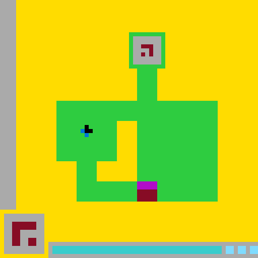
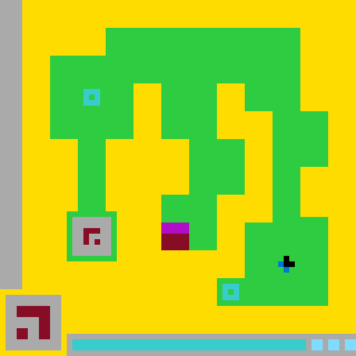
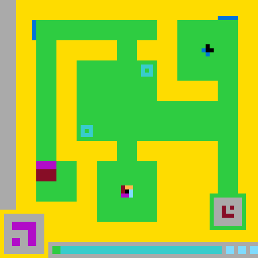

L1第一关完成检查点
Harness
19 A · 8 C
Baseline
60 A · 28 C
到达第一关边界时，Harness 少用 41 个环境动作和 20 次调用。
01研究对象Harness 包含持久 workspace、可执行世界模型、回放认证、BFS 和分级动作门禁。
02主要观察Full harness 完成 2 Levels；batched direct baseline 完成 1 Level。
03证据形式展示 notes、假说、WM 修订、动作预测与真实结果；不声称记录隐藏 chain-of-thought。
01 · 主对照
两组都使用 gpt-5.6-sol xhigh、vision on、seed 0，
都在第 72 次调用时停止。Baseline 每次可直接提交 1–16 个动作，
因此 baseline 不再受“一次调用只能执行一个环境动作”的限制，主要动作吞吐混杂得到缓解。
到达第一关边界时，Harness 少用 41 个环境动作和 20 次调用。
进入 L2 后，两侧使用的动作数、调用数和死亡次数接近；Harness 完成 L2，baseline 未完成。
| 指标 | Full Harness | Batched Baseline | 解释 |
|---|---|---|---|
| 最终 Levels | 2 | 1 | 当前主结果：observed gap = +1 |
| 环境动作 | 496 | 373 | Harness 已继续探索 L3，不能直接比较总动作效率 |
| 模型调用 | 72 | 72 | 双方均因同一调用上限停止 |
| 总 tokens | 12.064M | 7.219M | 相同上限，不是相同实际消耗 |
| Notional proxy | $51.34 | $25.53 | 统一资源代理，不是 Codex Plus 实际账单 |
| 墙钟 | 10,907 s | 4,625 s | Harness 需要维护和验证外部模型 |
| Output / reasoning | 930,316 / 643,530 | 300,926 / 292,010 | Harness 的外显记录和模型修订更重 |
| 模型/网络/协议失败 | 0 | 0 | 本组差异不能归因于已记录的基础设施失败 |
codex_cligpt-5.6-solxhighdisabledls20 / 0Harness：workspace、notes、假说账本、可执行 WM、全历史 replay、BFS、认证门禁和 monitored navigation。
Baseline：持久对话 + 当前 PNG + 1–16 动作 open-loop batch；无 Schema 文件、搜索、认证或自动纠错。
02 · 实验集合
本节同时列出正结果、无差异结果、预算停止和基础设施失败。D 级样本与空结果目录不计入能力统计。
30正式实验目录
13pilot 目录
3C0.5 Toy 验收
2results=[]，排除
| 等级 | 定义 | 允许的解释 |
|---|---|---|
| A | 同模型、seed、视觉和资源上限的有效配对；基础设施正常 | 描述当前 seed 与预算下的 completion difference |
| B | 单一条件能力运行，配置完整且无基础设施故障 | 说明该系统达到的 Level；不能单独归因 treatment |
| C | pilot、组件行为或迭代诊断 | 用于解释设计变更，不作为独立因果证明 |
| D | 网络、解析、超时、空响应或未形成有效结果 | 只评价工程稳定性，不计作 0-Level 能力样本 |
| 时期 / 系列 | 主要配置 | 结果范围 | 对实现的影响 |
|---|---|---|---|
| 7/21 · DeepSeek thinking / 协议 | 真实 ARC；早期 API runtime | D：空响应、连接失败、高延迟 | 加入硬超时、fail-fast、紧凑上下文与 paired_valid |
| 7/22 · FSM repair | DeepSeek non-thinking；50–80 actions | A：多组 0–0；seeds 1/2/3 均 0–0 | 确认 runner 可公平评估，也否定“修超时即可产生增益” |
| 7/22–24 · Program WM | 可执行 world_model.py；vision off 为主 | 0–0 或 1–1；无 completion gap | 声明式 FSM 改为程序模型、全历史回放与 BFS |
| 7/28 · Sol vision pilots | gpt-5.6-sol medium；vision on | B/C：0 L → 1 L | 视觉输入改善对象识别，但未形成对照差异 |
| 7/29 · B4′ | 严格 plan provenance；500 calls | C：0 L / 220 A | 暴露 WM 膨胀、预算后误动作和目标机制过拟合 |
| 7/29 · B5 | 稳定假说、approx replay；451 calls | C：1 L / 176 A；62 次 BFS no-plan | 定位单步 exploration 与 strict BFS 之间的动作通道断层 |
| 7/31 · C0.5 | Codex workspace runtime；Toy 环境 | D、D、C：最终 2-call Toy WIN | 完成网络、工具协议和 schema_cycle 验收 |
| 8/1 · C1 | Sol xhigh；vision on；seed 0 | D/B/B/B：最终 2 L / 71 A / 18 C | 确认 hybrid navigation 与 workspace runtime 可完成 L2 |
| 8/1 · short direct baseline | 18 calls；每调用 1 action | C：0 L / 18 A | 识别 baseline 动作吞吐混杂，不作为最终主对照 |
| 8/1 · Full / batched pair | 72 calls；800 actions；batch cap 16 | A*：2–1 | 当前主结果；仍需多 seed 确认 |
A* 表示预先固定 treatment、随后分别运行并完成配置审计；两侧 experiment.json 的机器字段仍为 paired_valid=null，因此不等同于同一 A/B runner 自动生成的 pair。
| experiment_id | 条件 / 目的 | 结果 | 等级 | 说明 |
|---|---|---|---|---|
20260721T123523.241658Z | DeepSeek thinking；协议检查 | 无有效能力结果 | D | 空 content / 解析与连接问题 |
20260721T123659.868822Z | DeepSeek thinking；重试 | 无有效能力结果 | D | 连接和延迟问题 |
20260721T153600.641677Z | 早期 FSM pair；50 actions | B 0 L / 50 A；H 0 L / 17 A | D | Harness timeout，pair 无效 |
20260722T020735.654174Z | FSM repair；50 actions | 0–0 | A | 双方跑满动作；闭环恢复 |
20260722T022150.478607Z | FSM；80 actions | 0–0；H 19 planned | A | 能生成计划，但 prediction mismatch 较多 |
20260722T023021.262858Z | FSM；80 actions | 0–0；H 13 planned | A | 仍未形成真实 goal 机制 |
20260722T023642.186112Z | FSM；seeds 1/2/3 | 3/3 pairs 均 0–0 | A | 多 seed 无 gap 负结果 |
20260722T031809.365218Z | Schema v2 / DeepSeek pilot | 0–0；H 53 C / 38 fallback | C | 程序 WM 循环出现，但无有效 plan |
20260722T100318.351779Z | Sol medium；vision off；80 A | 1–1 | A | 双方首次稳定到 L1，无 gap |
20260722T110925.665615Z | Sol medium；vision off；220 A | 1–1；双方 GAME_OVER | A | Harness 调用与计划更多，完成数未增加 |
20260724T094149.364803Z | DeepSeek Schema 长跑；160 A | 0–0 | A | 有效 pair；可执行 WM 仍非充分条件 |
20260728T124254.027422Z | Sol vision capability pilot | 0 L / 40 A / 106 C | B | 29 explore + 11 planned |
20260728T132644.295649Z | Sol vision capability pilot | 1 L / 200 A / 389 C | B | 115 explore + 85 planned |
20260728T151714.012744Z | Sol vision long pilot | 1 L / 270 A / 408 C | B | 131 explore + 138 planned + 1 reset |
20260729T043320.478531Z | B4′；严格 provenance | 0 L / 220 A / 500 C | C | 94 WM；104 experiments；预算停止缺陷 |
20260729T101629.181203Z | B5；approx navigation 前置版本 | 1 L / 176 A / 451 C | C | 62 BFS no-plan；102 个多动作探索提交被拒 |
20260731T135841.105613Z | C0.5 Toy；网络验收 | 0 A / 4 failed calls | D | 受限网络；能力无效 |
20260731T151325.670056Z | C0.5 Toy；工具协议 | 1 A / 2 C / 0 L | D | 最终返回兼容工具，未闭合 schema_cycle |
20260731T153213.510076Z | C0.5 Toy；全闭环 | WIN / 2 A / 2 C | C | explore → WM → replay → BFS → planned → WIN |
20260801T012423.214200Z | C1；12-call 网络样本 | 0 L / 2 A / 3 C | D | infrastructure_error |
20260801T022435.912080Z | C1；12 calls / 4M tokens | 0 L / 16 A / 11 C | B | token reserve 前停止；notes 已记录 L1 候选机制 |
20260801T035539.453308Z | C1；12 calls | 0 L / 19 A / 12 C | B | 最终升关预测与真实环境不符 |
20260801T053940.073668Z | C1；18 calls；全新 episode | 2 L / 71 A / 18 C | B | 首次真实 L2；0 model/network/tool failure |
20260801T065423.362952Z | short direct baseline | 0 L / 18 A / 18 C | C | 一动作一调用，存在吞吐混杂 |
20260801T075813.339305Z | Full harness；72 C / 800 A cap | 2 L / 496 A / 72 C | A* | 主对照 treatment；进入 L3 后因 call cap 停止 |
20260801T125126.753085Z | Batched direct baseline；batch≤16 | 1 L / 373 A / 72 C | A* | 主 comparator；无 Schema 产物污染 |
20260722T110857.100698Z | 仅配置目录 | results=[] | X | 不进入任何能力统计 |
20260728T132602.222517Z | 仅配置目录 | results=[] | X | 不进入任何能力统计 |
另有 13 个 pilot-runs/ 目录用于短烟雾、参数和协议验证；它们不进入最终 completion-gap 统计。7 月 23–24 日的其他 Schema v2 长跑包含 timeout 和 0-Level 样本，只有 20260724T094149.364803Z 在本表中按有效 pair 单列。
03 · 外显推理记录
这里展示模型主动写入的 notes、命名假说、世界模型修订、行动选择与真实结果。它们是可复核的外显记录，不包含不可见的私有 chain-of-thought。

72notes 版本
54world model 版本
47最终稳定假说
22 / 7supported / rejected
489动作前预测
97.1%匹配比例
04 · 视觉输入说明
以下角色来自本次 ls20 轨迹的交互证据，不代表 ARC 任务的通用颜色语义；同一编号在不同关卡也可能具有不同功能。

出口 / 目标框 补给源 变换开关 可控 5×5 tile 待匹配图形 计时条与生命与蓝色共同组成持久地面开关。
开关 motif 的另一部分；覆盖时触发图形变换。
主要可通行走廊，也是物体离开后恢复的地面。
背景或不可通行区域，定义迷宫边界。
目标框、面板边界或结构性框架。
底部剩余尝试 / 生命 reserve 标记。
可控 tile 的组成色，也构成目标和可变图形。
L2/L3 的一次性补给源；底部同时用作计时条。
可控 tile 的识别色；L3 还用于可变 display。


05 · 系统实现
真实 ARC 环境提供唯一的状态转移与关卡完成判定。Harness 保存和执行模型提出的世界模型，并对动作进行回放认证、预算检查和逐步监控。
PNG + 结构化观察
notes / hypotheses / world_model
exact / approximate replay + BFS
exploration / navigation / planned
逐动作预测、mismatch、边界
| 动作通道 | 提交形式 | 认证要求 | 执行监控 | 计入 BFS planned |
|---|---|---|---|---|
exploration | 一次一个动作，可绑定分辨实验 | 不要求完整目标模型 | 动作前预测与真实结果比较 | 否 |
navigation | 面向交互点的短动作串 | 当前 WM 已通过 exact 或非终局 approximate replay | 每一步检查 mismatch、非法、边界与预算，异常时截断 | 否 |
planned | 完整 BFS 动作序列 | 全 Timeline exact；绑定 WM version 与 plan_id | 提交必须与 BFS 输出一致；逐动作复核 | 是 |
Full run · 496 environment actions
navigation 用于世界模型足以支持局部移动、但尚不足以定义完整 goal/BFS 的状态；所有动作仍逐步预测和校验。
461/496 个环境动作为 navigation，14 个为严格 BFS-derived planned。因此结果应归因于完整 Schema-style treatment，不能单独归因于 BFS。
notes.md、假说账本、world_model.py、视觉帧、版本历史和 trace index 在同一 run 内持续保存。
Exact replay 可授权 BFS/planned；非终局 approximate replay 只可授权 navigation。Level、WIN、GAME_OVER 和动作空间始终严格。
confirmed → supported 只做协议词汇映射，并记录原状态与目标状态；不会修改假说陈述、证据或理由。
动作、调用、total/uncached/output tokens、每调用 reserve、notional proxy 和墙钟共同限流；首次不可恢复 transport 故障 fail fast。
06 · 结论与复现边界
下列陈述按当前保存产物、配置审计和 journal 校验划分；未把基础设施失败样本计为能力失败。
C1 461 条、Full harness 2,462 条、batched baseline 683 条；三条 SHA-256 哈希链的末端 hash 与最后记录一致。
Full run：72 版 notes、54 版 WM、72 个假说快照、72 个视觉帧；最终 47 个稳定假说。
Full run 489 次动作前预测，475 match、14 mismatch；match 率 97.1%，但该指标受普通移动动作占比影响。
ruff check src tests 通过；pytest 为 89 passed / 1 个 Windows 沙箱 timing test 失败，需在标准宿主复核。